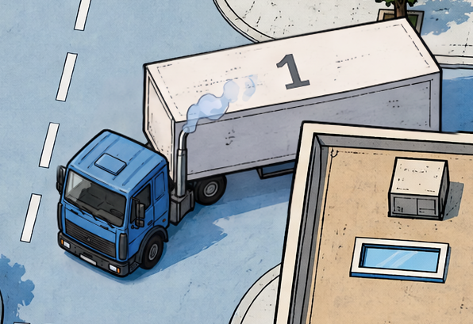
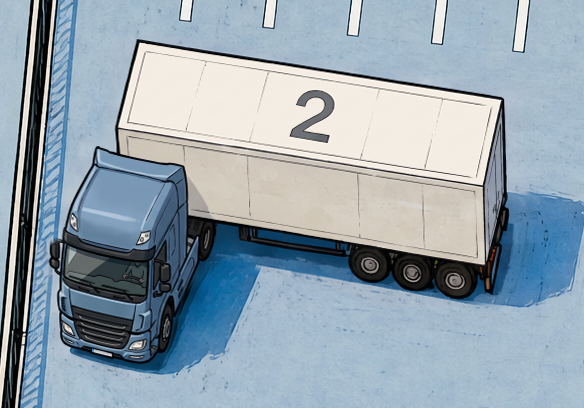
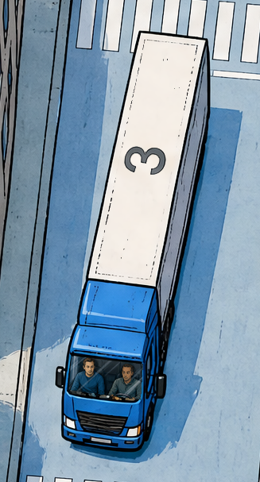
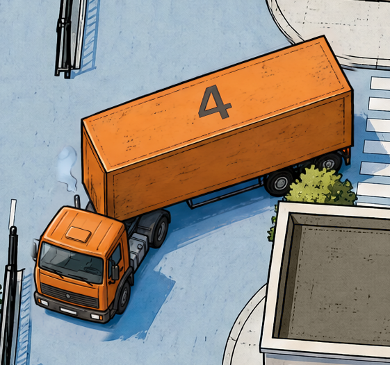
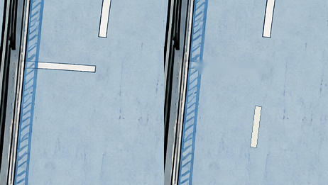
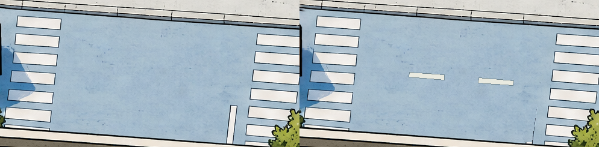
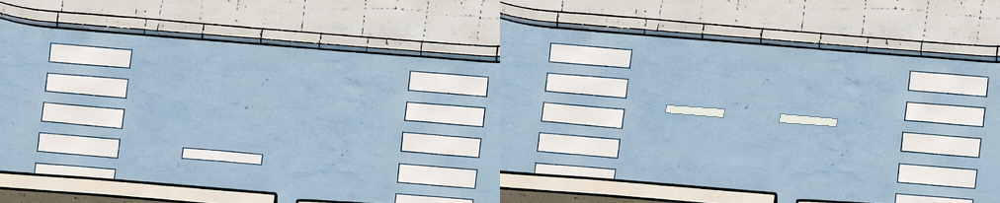
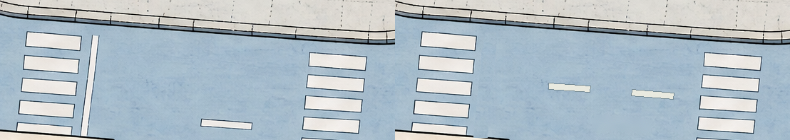

Версия 16: четыре разных перевозчика, лёгкий выхлоп у №1 и №4, спокойная дорожная разметка. Город и обе девушки сохранены.
{kind=link}
{kind=link}
На что смотреть у каждой машины
Матрица и первоисточники{kind=link}

Угловатая кабина, выцветший синий, умеренные потёртости и небольшой выхлоп. Не развалина: кузов и колёса целые.
Возраст заметен, но машина остаётся симпатичной. Дешевизна ей не приписывается.
{kind=link}

Обычная современная кабина, спокойный серо-синий цвет, один водитель, чистый прицеп. Рядом со складом — это видно по месту.
Близость помогает забрать груз, но по сценарию неторопливый водитель задержит доставку.
{kind=link}

Два человека за настоящим стеклом сохранены пиксель в пиксель. Кузов аккуратнее; нет сияющего ореола или знака правильного ответа.
Сменная работа ускоряет доставку, но аренда дороже. Машина остаётся на внешней дороге, не у ворот.
{kind=link}

Оранжевая старшая модель: простая кабина, потёртые кромки и лёгкий выхлоп. Без грязи, развалившихся деталей и драматического дыма.
Другая позиция в городе, тот же сценарный риск технической задержки, что у №1.
Крупные планы показывают версию 16; нажатие открывает пару «15 слева / 16 справа». На телефоне увеличьте карту для проверки экипажа. Подписи здесь — пояснения для ревью, не игровые подсказки.
Неочевидный выбор — не неразличимые машины. У №2 есть близость, у №3 — сменный экипаж, но раннее прибытие не бесплатно. №1 и №4 выглядят действующими ухоженными машинами, а не заведомо непригодными. Эти различия следуют сценарию от 17 сентября; мягкая трактовка возраста — уточнению клиента от 18 сентября, 10:39 UTC. Ни рейтингов, ни новых цен, ни пятого грузовика Express не добавлено.
В сценарии одна из машин №1/4 быстрее другой, но номер не назначен. Статичная карта не доказывает скорость №1/4 или медленное движение №2; анимация не входит в эту ревизию.
Асфальт: меньше случайных линий
Границы локальных правок{kind=link}
{kind=link}

Убран одинокий поперечный обрывок. Осевой штрих продолжает направление улицы, а не ведёт в ограждение.
{kind=link}

Два сдержанных осевых штриха между переходами. Убрана длинная случайная полоса рядом с нижней крышей.
{kind=link}

Вместо одиночного смещённого штриха — ровная ось в перспективе. Переходы и их выходы на тротуары сохранены.
{kind=link}

Нет линии на всю ширину улицы рядом с переходом. Штрихи идут по оси, а не ближе к фасаду. Зебры не перерисованы.
В каждой паре: слева 15, справа 16. Проверены все видимые участки и перекрёстки; корректные переходы, западная и восточная осевые оставлены. Семь разделителей мест перед шестью воротами не изменены. Новая сплошная сетка разметки не добавляется.
Что сохранено и как проверено
Утверждённый город не генерировался заново и не деформировался. Локальные кандидаты грузовиков вклеены по ограниченным маскам с защитой передних объектов. Для №3 отклонён кандидат, менявший панели и края: аккуратность крыши доработана по исходным пикселям, стекло и лица не тронуты. Дорожная краска исправлена отдельно, с восстановлением существующей фактуры асфальта.
Крыши, деревья, фасады, оборудование, ограждение, ворота и две исходные девушки сохранены. Крупная девушка внутри карты служит проверкой единого стиля; маленькая стоит у бизнес-центра. Это не изменение игрового интерфейса и не утверждение художественной приёмки.
Полный исходный размер без фигур · PNG · Требования и источники · Происхождение · Проверки пикселей · Пять размеров браузера · Границы проверки
{kind=link}